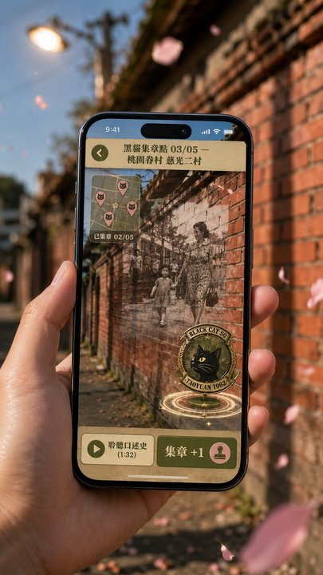
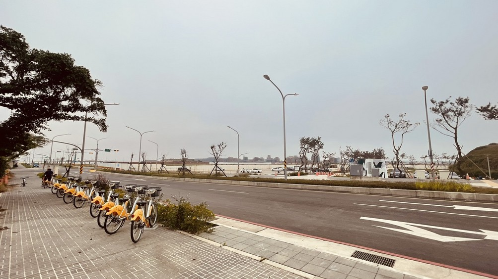

從場館擴散至城市 · AR 戶外擴增體驗將「等待的天空」從博物館內延伸到桃園全市 5 個關鍵點位，串聯機捷沿線、空軍基地、眷村文化園區、藝文特區與機場。
AR App 手機介面 Mockup

城市點位地圖

AR 5 點位 · 城市擴散
AR-01
機場捷運 A12 站
機捷沿線 · 大園區 / 觸發距離 30m
冷戰時期航站歷史地景疊加。掃描 A12 站體即可看見 1962 年舊航站樓重建影像。
AR-02
桃園空軍基地周邊
大園區 · 黑貓中隊原駐地
U-2 AR 歷史飛行軌跡。手機向天空仰望，可見 1962 U-2 起飛軌跡疊加在現代天空上。
AR-03
大園眷村文化園區
大園區 · 眷村二代品牌駐點
《一把青》場景符碼 AR。掃描眷村牆面 → 浮現 1960s 眷村日常場景，朱青式背影、煤油燈、舊收音機。
AR-04
桃園藝文特區
桃園區 · 集章兌換中心
集 5 章兌 VR 體驗。完成 5 個 AR 點位即可在此兌換場館 VR 沉浸體驗 + 紀念勳章 NFT。
AR-05
機場第二航廈
大園區 · 過境旅客接觸點
過境旅客微體驗。航廈內掃描 QR Code → 2 分鐘黑貓微紀錄片，引導國際旅客了解桃園歷史 IP。
AR 教育包 · 對應 SDG 4
AR 卡片組共 4 套，適齡分級（不列校名）。每套含 6 張 AR 卡 + 線上學習單。
國小版
紙飛機與基本航空原理
國中版
冷戰史簡介與 U-2 機型
高中版
解密文件閱讀與情報倫理
成人版
跨世代記憶與 ESG 永續
AR 技術規格
| 平台 | iOS ARKit / Android ARCore · WebAR + Native APP |
|---|---|
| 關鍵指標 | SLAM 場景定位 · Marker + Markerless 雙軌 |
| 引擎 | AR Foundation / Unity |
| 人機互動 | 手勢、語音、SLAM |
| 無障礙 | 離線資料包、中英日韓四語 |
| 個資 | GPS 不留存（ESG-G 透明揭露） |
AR 開發與點位建置預算：800 萬元（總預算 10%） · 5 城市點位 + 教育包（SDG 4）